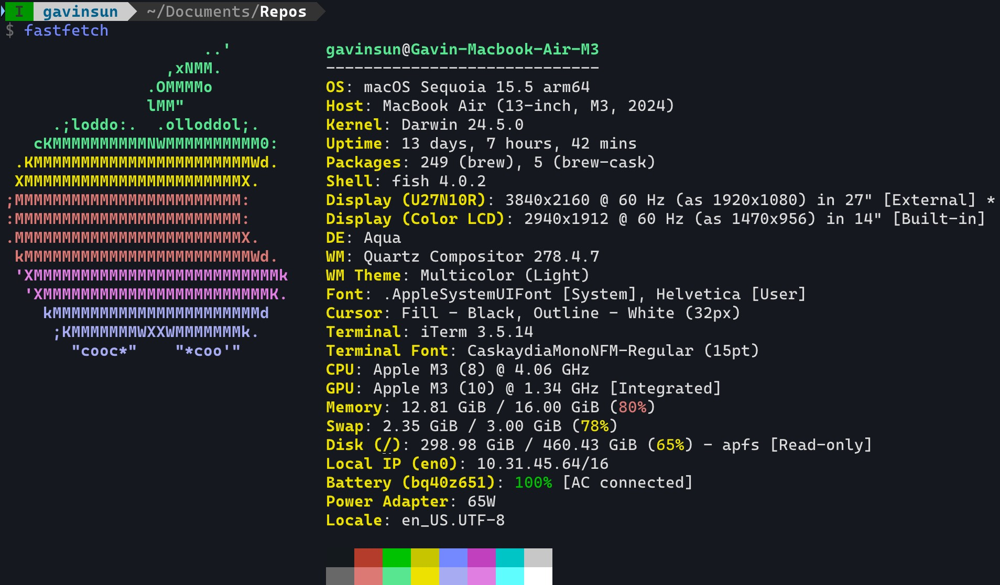
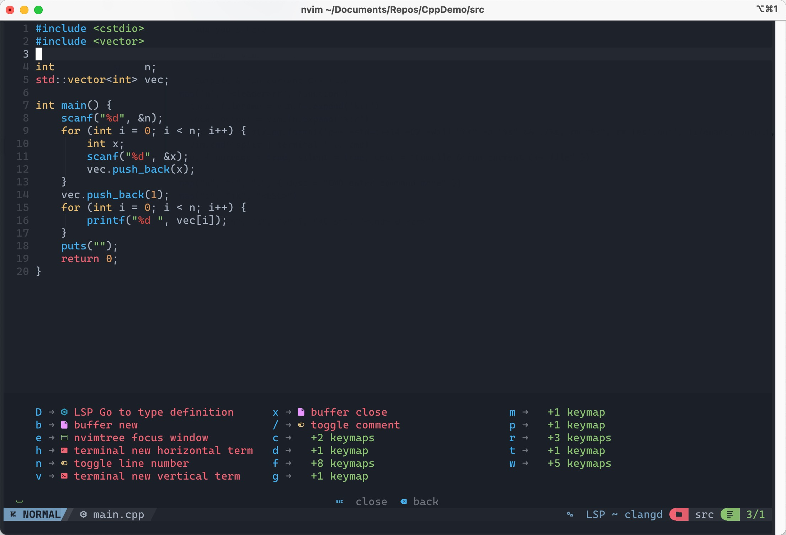
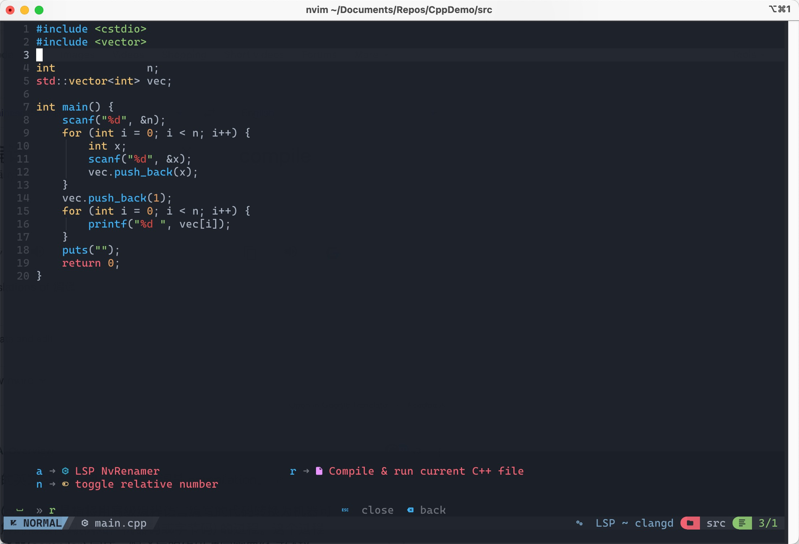
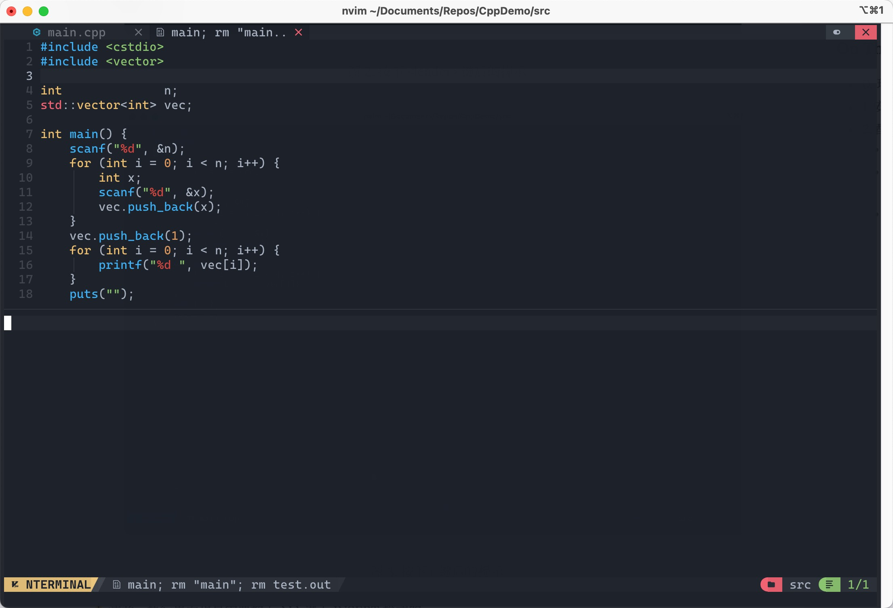
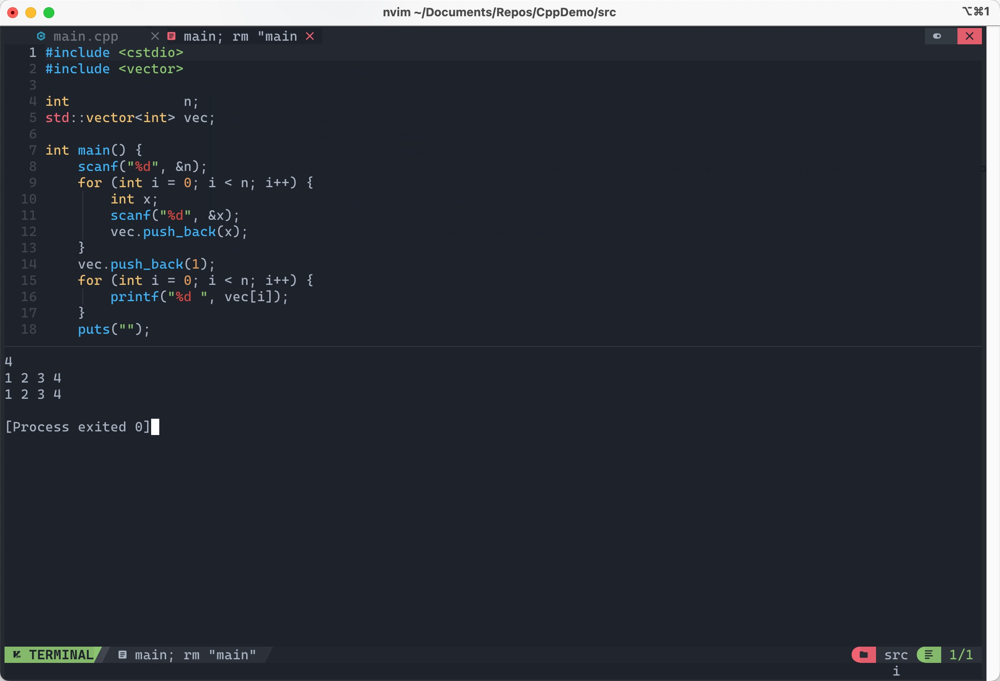
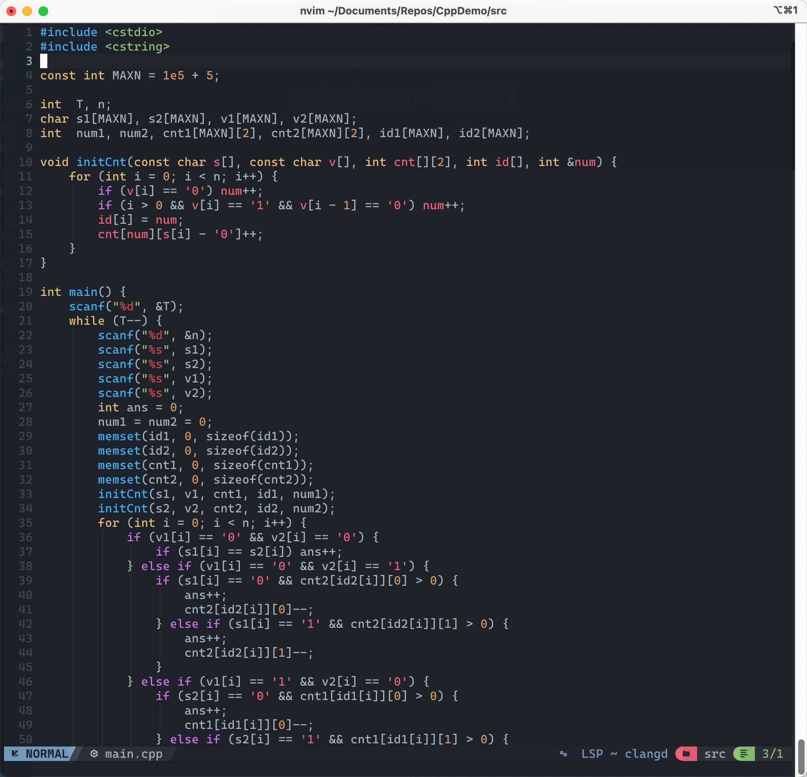
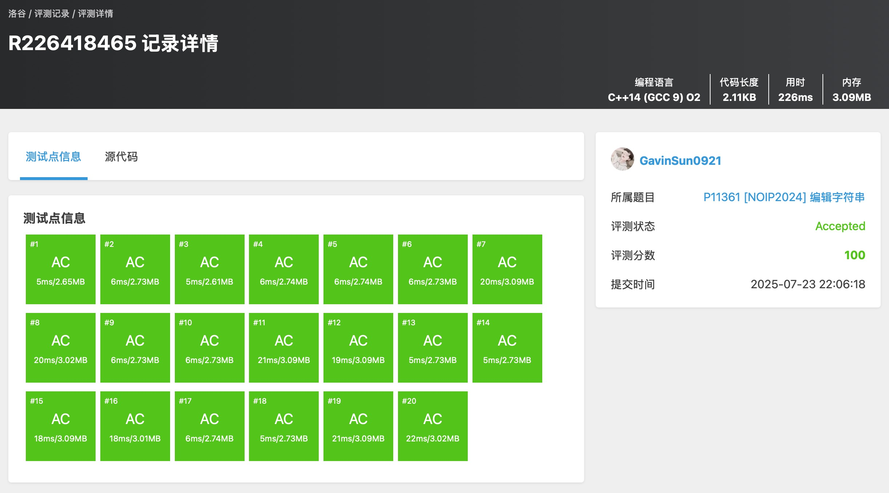

Neovim简单C++开发环境配置过程

0. 环境基础
- 系统平台配置：

图 1. 操作系统环境配置- Neovim版本：
$ nvim --version
NVIM v0.11.3
Build type: Release
LuaJIT 2.1.1748459687
Run "nvim -V1 -v" for more info
- 配置目标：一个轻量化的 C++ 开发环境，带有自动补全、语法高亮、注释、括号补全等功能。
1. 安装 NvChad
git clone https://github.com/NvChad/starter ~/.config/nvim && nvim
安装好之后默认在 ~/.config/nvim 下的文件结构是这样的：
$ tree nvim/ Wed Jul 23 19:44:25 2025
nvim/
├── init.lua
├── LICENSE
├── lua
│ ├── autocmds.lua
│ ├── chadrc.lua
│ ├── configs
│ │ ├── conform.lua
│ │ ├── lazy.lua
│ │ └── lspconfig.lua
│ ├── mappings.lua
│ ├── options.lua
│ └── plugins
│ └── init.lua
└── README.md
4 directories, 11 files
2. 配置 NvChad
2.1 配置 LSP
Language Server Protocal (LSP)，即语言服务器协议，用于 编辑器或IDE 和 语言服务器 之间的通信。服务器提供特定于语言的功能，例如代码补全、错误检查、跳转到定义等，而 LSP 确保了不同编辑器和语言服务器之间的互操作性。
直接在系统安装好 clangd ，能够直接在命令行直接调用，所以就不用再通过 Mason 再安装一份了，直接在 ~/.config/nvim/lua/configs/lspconfig.lua 文件内添加一行：
require("lspconfig").clangd.setup {}
现在通过 Neovim 编辑 C/C++ 的文件已经有代码补全等功能了。
2.2 配置代码缩进和格式化
在 ~/.config/nvim/lua/options.lua 文件中进行配置，原文件使用的 “nvchad.options” 默认的行缩进是2，我将其修改为4，修改后的文件内容为：
-- ~/.config/nvim/lua/options.lua
require "nvchad.options"
-- add yours here!
local o = vim.o
o.cursorlineopt ='both' -- to enable cursorline!
-- Indenting
o.expandtab = true
o.shiftwidth = 4
o.tabstop = 4
o.softtabstop = 4
然后在 ~/.config/nvim/lua/autocmds.lua 文件中进行配置，调用我们的 clangd 去执行 .clang-format 格式化代码。
-- ~/.config/nvim/lua/autocmds.lua
require "nvchad.autocmds"
local autocmd = vim.api.nvim_create_autocmd
-- 自动保存时用指定的 .clang-format 格式化 C/C++ 文件
autocmd("BufWritePre", {
pattern = { "*.cpp", "*.cc", "*.c", "*.h", "*.hpp" },
callback = function()
vim.lsp.buf.format({ async = false })
end,
})
LSP（clangd）会自动查找 .clang-format 文件，查找顺序是：
当前文件目录 -> 父目录 -> ... -> 根目录 -> 用户主目录（$HOME）
所以可以配置一个全局配置文件放在用户主目录里，如果具体文件内有更详细的要求，只要在贴近文件的目录或者项目目录再添加配置文件即可。
目前在用的 .clang-foramt 配置文件供参考：
Language: Cpp
BasedOnStyle: LLVM
AccessModifierOffset: -4
NamespaceIndentation: All
IndentWidth: 4
TabWidth: 4
UseTab: Never
BreakBeforeBraces: Attach
IndentCaseLabels: true
ColumnLimit: 120
# 连续赋值时，对齐所有等号
AlignConsecutiveAssignments: true
# 连续声明时，对齐所有声明的变量名
AlignConsecutiveDeclarations: true
AlignTrailingComments: true
AllowAllArgumentsOnNextLine: true
AllowAllConstructorInitializersOnNextLine: true
AllowAllParametersOfDeclarationOnNextLine: true
AllowShortBlocksOnASingleLine: Empty
AlwaysBreakAfterReturnType: None
AllowShortIfStatementsOnASingleLine: true
BinPackArguments: false
BinPackParameters: false
2.3 配置一键编译并运行
配置单文件编译并运行快捷键，主要用途是用于进行轻量化 C++ 编程，如果是基于 CMake 等工具进行构建的项目同理可以参考进行配置，在 ~/.config/nvim/lua/mappings.lua 添加对应内容：
-- Compile & run current C++ file
map('n', '<leader>rr', function()
local filename = vim.fn.expand('%:t')
local output = vim.fn.expand('%:r')
local cmd = string.format('g++ -std=c++14 -O2 -Wall "%s" -o "%s" && ./%s; rm "%s"', filename, output, output, output)
vim.cmd('split | terminal ' .. cmd)
end, { noremap = true, silent = true, desc = "Compile & run current C++ file" })
这段代码内的对应功能是按下 <leader>rr 快捷键后（默认 <leader> 键是空格），会以 C++ 14 标准去编译当前打开的文件并运行，且会在运行结束后删除编译出来的可执行文件 ，在运行时会拆分出来一个 buffer 用来显示执行界面。

图 2. 按下 <leader> 键后的提示
图 3. 按下 r 键后的提示
图 4. 再次按下 r 键后运行效果，开始执行程序
图 5. 按下 i 键后进入 INSERT 模式，可以在可执行程序中输入数据⚠️注意：执行界面也是需要按下 i 进入 INSERT 模式的。
3. 竞赛的额外配置（个性化）
3.1 一键复制代码
自己本地运行完代码经常需要复制代码提交到在线 OJ 上，所以额外配置了一个一键将当前编辑代码复制到剪贴板上的快捷键，添加到 ~/.config/nvim/lua/mappings.lua 末尾即可：
-- 一键拷贝当前文件全部内容到系统剪贴板
map('n', '<leader>rc', function()
vim.cmd(':%y+')
end, { noremap = true, silent = true, desc = "Copy entire file to clipboard" })
依次按下 空格 r c 三个键后代码就被拷贝到剪贴板内了。
3.2 更多操作
可以参考上方的操作自定义更多的快捷键。
4. 尽情使用
可以使用它来写简单的 C++ 单文件代码了，完美的算法竞赛（ICPC/OI等）选手使用场景！
简单做一道真题吧：P11361 [NOIP2024] 编辑字符串

图 6. P11361 AC代码在 Neovim 中效果
图 7. P11361 提交结果